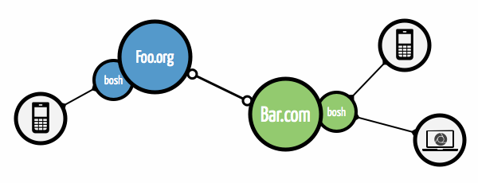
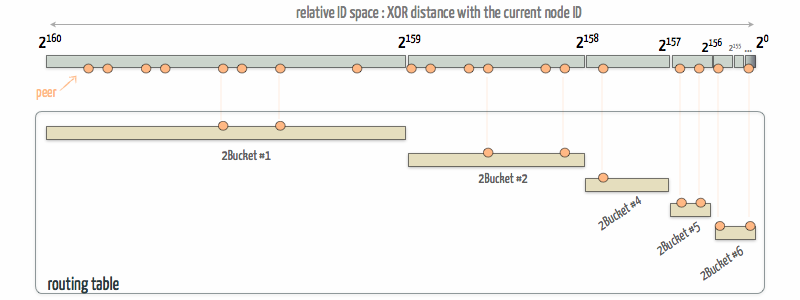
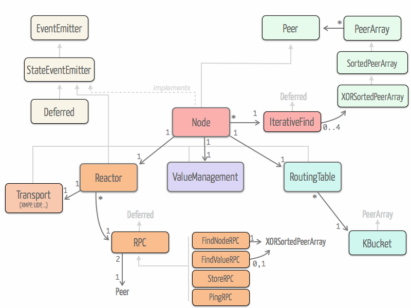
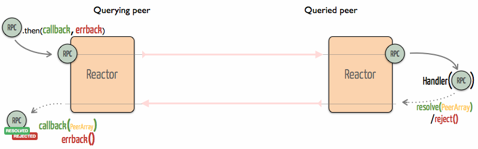
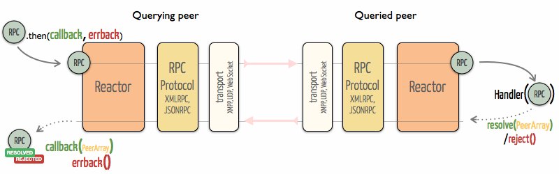
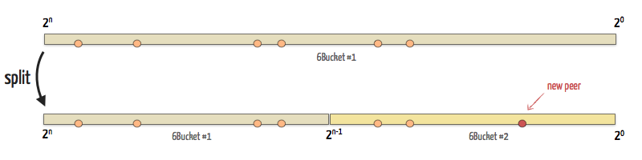
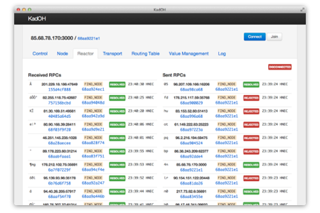
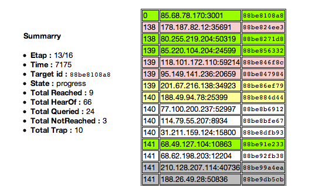
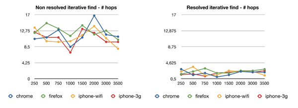
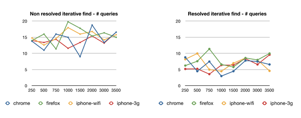

Kademlia over HTTP, a Javascript framework bringing DHT to mobile applications
Abstract — Peer to Peer protocols are widely used in desktop applications where they have been deployed and improved over the years. Particularly, the Kademlia protocol is used by most eMule and BitTorrent clients. However, mobile devices have never been supported by such softwares because of the difficulty to start peer to peer connections on cellular networks. As smartphones carry more and more personal informations, they should take advantage of decentralized DHTs with no central point of control. Therefore, new mobile applications could go beyond file sharing while protecting these critical data. In this report, we will introduce how we designed a full Javascript implementation of the Kademlia DHT protocol named KadOH – for Kademlia over HTTP – working on both desktop and mobile browsers. Firstly, we justify our technology choices and development architecture, and secondly, we evaluate the system on medium scale deployments.
Acknowledgments – We would like to thank Dr. Tudor Dumitraş, who gave us the honor to work with him and always made available his support.
Alexandre Lachèze and Pierre Guilleminot
Introduction
The main application Peer to Peer softwares are known for is file sharing without relying on a central server. However, the main idea of Distributed Hash Tables (DHT) is simply to lay on end systems intelligence for routing, transmitting, searching or storing flows of data. This model has many advantages, and can be the basis for numerous applications. By delegating logical decisions to nodes, it becomes possible to build scalable networks, with no single point of failure where the sharing of content between users does not require any centralized storage unit.
However, taking mobile users into account is a real challenge. From a network perspective, the reachability of peers is limited, and the increasing number of stale peers greatly affects the routing precision and reliability of the system. From a development point of view, the variety of mobile frameworks makes a cross platform implementation hazardous.
Accordingly, we had to come up with new ideas to get round these issues, and finally chose technologies that are rarely used in the P2P landscape. For instance, the choice of the XMPP protocol as our main communication layer has turned out to be a really good compromise between a fully decentralized network hardly feasible on mobile devices, and client-router architecture. Also, the Javascript language proved to be a relevant framework to build decentralized systems for mobiles as it is standardized on most platforms and well oriented toward network application development.
Also, only depending on web based technologies allows KadOH to be the building block of new decentralized and easily deployed web applications. As it is also very experimental, we made KadOH highly extensible and modular to easily anticipate new coming web technologies.
Approaches and choices
This section is intended to justify our main choices of development. These decisions are the result of our investigations and considerations on the sensitive issues of the project.
Our conclusions took time to mature as they were elaborated throughout the development.
Javascript
At first stages of our development, we had to choose between developing our application in native programming, or using web technologies. Native applications have the advantage to perform very well and to have access to all features of the device, like persistent storing of good amount of data. However, they are not standardized and rarely supported by all devices in the same time.
We decided to use Javascript because it has many advantages to develop network oriented mobile applications. In fact, thanks to the youth and freshness of most smartphone browsers, mobiles are even more attractive than desktops to write platform-independent web-applications that work out-of-the-box. Besides, the application becomes usable in all modern desktop browsers and in any frameworks embedding a Javascript Virtual Machine.
As a language, Javascript has also significant advantages regarding network logics. It is event-driven and benefits from the simplicity of closures. As a result, there is no need for event loops or any additional event oriented framework. The language is also entirely single-threaded from the programmer point of view, which considerably simplify the development.
Performances of Javascript have been greatly improved over the past years. Indeed, newer and faster VMs have been actively researched and developed (V8, JägerMonkey, Nitro, ...), making the language 10 to 100 times faster than it was ten years ago. Performances are still not comparable to native frameworks for real-time applications, or heavy processing programs but for a DHT which does not require heavy computations and benefit more form asynchronous I/O, performances of these virtual machines are more than enough.
The distribution process of the application was also in favor of Javascript. Web-apps can be easily distributed both as native applications or as simple web pages. This discharges us from the costs of installations, upgrades and SDKs. But also, it relieves us from the controls of third parties which are very common in mobile app-stores.
Finally, since web-apps are mainly delivered through HTTP servers, updating process are simplified and easily deployed. There is no need to maintain backward compatibility which may be tricky to deal with in distributed systems.
Transport layer
In cellular networks, receiving incoming packets in the P2P fashion may be a critical point. This has been a problem too for desktop softwares when they have to go around NATs. Solutions always involve critical points which go against the end-to-end principle of DHTs.
In an in-browser environment, it becomes even technically impossible to open a socket to listen to incoming connections. In fact, nowadays, browsers can only send HTTP requests to a given server. So, by design, we had to find solutions to keep our DHT decentralized and still relying on a server to proxy our requests.
Proxies
One solution has been to develop proxies to route requests between peers. We thought about semi-decentralized systems where proxies could route messages between each other through UDP or TCP channels, and clients could connect to any proxy using full-duplex HTTP communication channels (like WebSocket or XHR Long Polling).
Those proxy were thought as super-nodes which would route requests and be accessible to anyone. By design, they may represent a point of failure in our decentralized system.
Even so, this infrastructure was really interesting because we used those proxies to connect our clients to existing DHT — like Mainline or Kad — using other socket transports non accessible from Javascript. This has proved to be very convenient to test the efficiency of the DHT, and solved many technical issues. As a result, we kept these tools to help us along the development process.
XMPP
The main goal was to depend on an existing, distributed and scalable infrastructure. This is why we chose the XMPP protocol to establish peer to peer connections. XMPP is a widely used open standard to exchange XML based messages between peers. Even though XMPP has a client-server architecture, it meets many of our constraints since it is decentralized thanks to its open protocol and server to server communications. Moreover, many XMPP servers are freely available over the Internet, and this protocol is used by large instant messaging servers, like Google Talk or Jabber.org.
The XMPP protocol uses a stateful TCP channel to connect server with clients, which is not feasible from a browser. But the BOSH — Bidirectional-streams Over Synchronous HTTP — extension makes it possible to connect any browser to any XMPP server through synchronous HTTP requests. In consequence, all connections started from the browser using BOSH are sent through the HTTP port 80 which ease the NAT traversing unlike the standard XMPP port 5222.

We based our XMPP transport on Strophe.js. This library is the main reference to perform real-time XMPP applications over BOSH in browsers. It is well documented – a book is devoted to it – and has a good support from the community.
Even if we opted for this particular solution of XMPP, we implemented several other transports, such as UDP – only with Node.js – and WebSocket (thanks to the socket.io library) which may be more interesting end-to-end solutions in some particular applications.
Kademlia particularities
Kademlia is a Distributed Hash Table (DHT) algorithm described in Kademlia: A Peer-to-peer information system based on the XOR Metric and designed by Petar Maymounkov and David Mazières in 2002. Nowadays, Kademlia is used in particular for file sharing by most eMule and BitTorrent clients as part of the Mainline protocol.
Like for other DHT (chord), the algorithm stores (key, value) tuples among a large number of peers and provide a process to retrieve a value given the associated key. It also provide a mean to keep the DHT consistent despite peers arrivals, departures, and failures. It is based on the XOR-metric distance on an ID space (mostly 160 bits long). Keys of values belongs to this ID space as well as the IDs of peers that are uniquely attributed to each one.
Kademlia algorithm is different from other DHTs in by two particularities : the knowledge of the network of each node and the iterative look up process.
Routing
Each peer has a partial knowledge of the other peers connected to the DHT, that allows it to route the requests of others. However this knowledge is more accurate in the close space.
The knowledge of the network is provided by the routing table, where peers are grouped in K-buckets. Each K-bucket contains maximum K peers which distance with the actual peer is in a specific range. For instance, the first K-bucket, which contains the farther peers, have peers which distance is in ]2159, 2160]. The second one has range ]2159, 2158], and so on. Thus, the actual peer has more accurate knowledge of peers that are closer to him.

Each time a peer is successfully contacted or contacts us, it is added in the routing table and sorted in the right K-bucket.
Parallel iterative lookup
A particularity of Kademlia is to parallelize multiple requests at each iteration of the iterative lookup process. This makes the algorithm tolerant to stale peers by overcoming them and therefore accelerates the look up.
Application Design
During our development process, we had to try many different technical options and refactor number parts of the architecture. Implementing new ideas and concepts had to be painless, therefore our design focus on extensibility and reliability.
The application is developed as a framework, organized in a collection of replaceable and extensible modules. As a simple example, our transport layers implement the same interface which allowed us to test different alternatives. This design principle required efforts of abstraction and anticipation, yet the final application gains legibility and extensibility.
In this chapter, we give details of our development principles to meet our requirements.
Architecture
In this part, we will enlighten all the parts that compose our module oriented architecture.

At early stage of our development, we took a look at the entangled implementation which is written in Python. Entangled inspired us the high-level architecture of our implementation based on four main parts : Reactor, Routing Table, Value Management and Node. We also got inspiration of the fact that entangled is deeply based on twisted and especially uses Deferred objects.
Reactor and RPCs
The reactor is the part responsible for dealing with incoming and outgoing RPCs. It provides a thick layer of abstraction over the protocols used to exchange RPCs and their asynchronous nature. The reactor is mainly based on an extensible RPC class that leverages the deferred pattern.
RPC classes
The goal behind RPC class is to give the illusion of handling a single shared and synchronized deferred object across the querying and the queried peer. This object represents a complete RPC, embodied at once the query and the response. Moreover, since it extends deferred, it inherits from all deferred facilities such as batch processing.
Thus, the RPC object is created on the querying peer side where the arguments of the query and destination are specified. Callback functions are attached to the deferred. The object then traverses the network to the queried peer where the query gets handled by the appropriate handler that resolves or rejects it with arguments. On the querying peer side, the RPC object gets remotely resolved or rejected with the same arguments, and callbacks are called.

RPC class is extended to specific classes corresponding to the different RPC methods (PingRPC, FindNodeRPC, FindValueRPC, StoreRPC) used in Kademlia. These extensions allows to perform specific handling of query parameters and response arguments.
Here is how a simple find node query is built and asynchronous callbacks are attached :
// Build a new find node RPC
// - the first parameter is an instance of Peer : the peer to query
// - the second is the ID targeted by the find node query
rpc = new FindNodeRPC(peer, 'de9f2c7fd25e1b3afad3e85a0bd17d9b100db4b3');
reactor.sendQuery(rpc);
//attach a callback
rpc.then(function(peers) {
//callback is executed with the response of the queried peer as parameter
//the responded peers is directly a XORSortedPeerArray, ready to use :
peers.pickoutFirst(globals.ALPHA);
//continue ...
});
On the queried peer side, the RPC gets handled like this :
//attach a callback to the reactor, called when receiving a RPC query
reactor.on('queried', function(rpc) {
//different handle depending on the RPC method
if(rpc instanceof FindNodeRPC) {
//get in the routing table the BETA closest peers to the find node targeted ID
var peers = routingTable.getClosePeers(rpc.getTarget(), globals.BETA);
//resolve the RPC with the peers (instance of PeerArray) as argument
rpc.resolve(peers);
}
});
Protocols stack
In order to cope with our modular design we took care of layering the reactor in three independent parts.

Transport
To transport our RPC messages over the network from peer to peer, we considered different techniques. Thus, our implementation supports several transport protocols wrapped in Transport class which methods are independent of the protocol.
These are the transport protocols that our implementation supports :
- XMPP over BOSH running in browser using Strophe.js
- XMMP running in Node.js and using the node-xmpp library
- UDP running in Node.js and using the native datagram sockets module
- SimUDP over websockets which runs in browser and in Node.js and uses the Socket.io library. Since websockets is not a peer to peer protocol, we managed to mimic simply the UDP protocol over websockets thanks to a routing server. We called it SimUDP and we reused it in proxies such as our Mainline proxy or in a UDP proxy.
RPC encoding
RPC messages are encoded and decoded according to standard RPC protocols. Our implementation supports two of them very similar in their structures :
- JSON-RPC 2.0: based on JSON, a generic data format in Javascript.
- XML-RPC: based on XML a common data format for browsers since HTML is an extension of XML. Moreover, embedded XML-RPC into XMPP is a standard XMPP extension called Jabber-RPC.
Since, the parsing operation could be very expensive towards computation resources, care should be taken when choosing a RPC protocol data format :
- JSON fits well for our use since modern browsers have a native parser, as well as other Javascript execution environments (Node.js).
- Regarding XML, leveraging the native DOM parser and manipulation API of browsers is good way to optimize the parsing. Since Strophe.js exploits this optimization, we implemented Jabber-RPC protocol as a Strophe.js plugin. In Node.js, we used the ltx module that presents a similar API to Strophe.js and takes advantages of the expat library (through node-expat), an XML parser written in C. node-xmpp also depends on ltx.
Implementation protocol
To add consistency to our implementation we chose to use ubiquitous structures. RPC objects have also to deal only with these objects. They are also responsible to transform these structures into a normalized data format to be encoded using one of the standard RPC protocol. At the decoding step, a validation is performed towards the received data and the exact same structure object is instantiated.
Routing Table
The routing table is responsible for managing peers. It is composed of all the k-buckets. Most parts of this object are implemented in a standard fashion regarding other Kademlia implementations.
The KBucket class extends PeerArray and implements additional functions to handle a range. Indeed, every bucket is associated to a segment of the key space, and ensures that every peer it contains belongs to this segment.
One of the most critical algorithm of the routing table is to return the closest peers form a given target key of the space. This routine is performed by retrieving peers from the bucket in charge of the range which contains the target key. If this bucket does not hold enough peers, the search is reiterated in its neighbors.
Bucket splitting
An interesting algorithm of the routing table is how it generates new buckets. When first instantiated, the routing table contains only one bucket which range includes the whole key space ]20, 2n]. When this bucket is full, it is split into two buckets of range ]20, 2n-1] and ]2n-1, 2n]. Peers are then reorganized between the two buckets.

This process is performed every time a new peer is added to the full and smallest ranged bucket (i.e. the only splittable one). If a new peer is added to a full and non-splittable bucket, its least recently seen peer is removed and this new peer is added.
Refresh process
The routing table is also responsible of the refresh process which occurs when a bucket has not seen any new peer for a long period of time. Each bucket manages its own timer, reseted every time a peer is added to it. The value of this timer is each time randomly chosen in a window around a configured value. This prevent a burst of network activity when multiple buckets have synchronized timers, caused e.g. by simultaneous instantiations of buckets during a join process.
Using timers in Javascript is made easy thanks to the global functions setTimeout and setInterval. These allow to rely on the underlying VM to handle timers and the execution of closures during the flow of events.
Note that the logic of the this refresh process is not implemented inside of the routing table object since it only involves network routines. In fact the routing table only emit a refresh event, caught and executed in the Node object.
Value Management
The value management is responsible for managing key/values that the node has to store. It provides methods to save, retrieve and remove them, but it is also responsible for managing the associated timers. Indeed, in our implementation, two timers for each key/value are used:
republish: to ensure the persistent of a key/value, the original paper requires that key/values are periodically republished. To apply to this, a republish timer is set for each saved key/value (and reset if re-saved). When one of this timer timeouts, a republish event is emitted and caught by Node that is in charge to republish the concerned value.
expiration: when a key/value is published, an expiration date is associated to it before spread on the network. This ensure that it will not neither present nor republished on the network after this date. Thus, when saving, an expiration timer should be set according to the expiration date to plan the deletion of the key/value.
Since during an iterativeStore process a key/value is stored on several nodes roughly at the same time, the republish timers might be synchronized across the network. This can lead to periodic bursts of activity. To avoid this convoy effect, each timeout value is randomly chosen in a window around a configuration value. Thus, the first triggered republish cancels most of the other ones on the network, minimizing the number of republish processes.
Persistent storage
To improve DHT consistency, it would be convenient to retain the keys/values collection when session stops and to recover it when the session restarts. This would limit the loss of data redundancy due to node departures.
Since our implementation targets browser environments, writing in a file on the hard drive is not an option. However the DOM (Document Object Model) implementations provide two kinds of persistent offline storage. Among them cookies are the oldest one. But we focused on the recent localstorage html5 feature, which bring along greater capacity and simplicity.
To leverage localstorage we use the lawnchair library which optimizes its use and provides a simplified API. Besides, whenever localstorage is not supported by a device, it will attempt to switch to a more common storage technique.
In the localstorage, the key/value collection is associated to a session identified by the couple node address / node ID. During the initialization, it checks if a previous session has been retained in the localstorage. The session recovery process consists in resetting the timers for each key/value and remove those which have expired during the session inactivity.
However, since our implementations aims at running in DOM independent environments such as node.js, we implemented a BasicStorage that replaces lawnchair behind the same interface. This storage is, for the time being, non persistent since it is little more than a Javascript key/value object. But we could easily work out a persistent one, relying on a key-value database such as redis.
Node
The Node object is the place where the three main parts – Routing Table, Value Management and Reactor – are glued together. This part is actually where the Kademlia logic is implemented. Since it uses the abstraction of the other parts, focusing on the Kademlia logic is easy and it is highly hackable to test variants.
Iterative lookup
An important part of Node is the iterativeLookup object that embodies the iterative lookup algorithm in a deferred way.
Since the original paper is a bit ambiguous regarding to the implementation of the algorithm, we developed different versions of it (v1 and v2), based on the understanding from both of us. Both implementations take advantage of the high level API of the Reactor and the utility methods of our structures object Peer and XORSortedPeerArray, making the code clear despite the complexity of this algorithm.
The iterativeLookup object is then used in different iterative research processes :
iterativeFindNode: aims at finding a peer on the network knowing its ID. It uses the find node RPCs.iterativeFindValue: aims at finding a value on the network knowing the associated key. It uses the find value RPCs.join: uses the iterativeFindNode on its own node ID to populate the routing table at the beginning of a sessioniterativeStore: aims at publishing a value on the network. It finds the peers responsible for storing a key/value thanks to iterativeFindValue and send them store RPCs
Public API
Since Node is the central parts of our implementation, it exposes the public API. This interface is the starting point to build an application based on KadOH.
node = new KadOH.Node(id, options)
This is how instantiate a Node where id is the desired node ID (not necessary) and options a set of initialization options such as JabberID and password to connect to XMPP service. Since KadOH is based on a decentralized network, the application need to know addresses of already connected peers to use as bootstraps in joining the network. These addresses shall be indicated in options.
node.connect(function() {
node.join();
});
When the connect method is called, the transport connects, the node is able to join the DHT. Once connected the callback function given in parameter is called. In general, this is where the join method shall be called to start a joining process using the bootstraps as starting points. This method also takes a callback function as an argument called when the joining process is completed.
After having join the DHT, the node object basically works like a hash table with two simple methods to store and retrieve data from the DHT. Here is how these two methods are implemented :
- the
put method allows to publish a value on the network associated to the given key :
node.put('0beec7b5ea3f0fdbc95d0dd47f3c5bc275da8a33', 'Hello world !');
- the
get method allows to retrieve a value on the network given the associated key :
node.get('62cdb7020ff920e5aa642c3d4066950dd1f01f4d', function(value) {
alert(value);
});
This is the basic API of the Node object, however it contains many more low-level functions, detailed in the documentation, to access the bare techniques to interact with the DHT.
Bootstrap
To join a DHT, a node shall know some peers that are already connected to the DHT. These are called bootstraps and are often publicly known dedicated nodes.
In the optic to simulate our DHT implementation, we needed the same kind of dedicated nodes. We also created a Bootstrap object which is a simplification of Node since it gets rid of the Value Management and the Routing Table. This simplification is a way of optimizing the system for this specific use and to be less susceptible to crashes due to bugs.
Bootstrap has a simple PeerArray instead of a complete RoutingTable and responses only to ping and to find node RPCs by picking random peers in this array.
Design patterns
Here we describe the most common patterns that improve the quality of our code and helped us in our development.
Code reuse
Since our implementation contains around 6,000 lines, an important development behavior is to take care of writing reusable code. Moreover, we wanted our system to be extensible and modular. A strictly class based language like Java would have helped us to fulfill these requirements, since logic inheritance is the hearth of these languages. But the fact is, despite of being an object oriented language, Javascript is not class based. Javascript is instead prototype based, which makes inheritance not natural, but still possible.
Somehow, some techniques are widely used to imitate classical inheritance syntax in Javascript. Some of them are described in the book Javascript Patterns, chapter 6 (Code Reuse Patterns). Thus, most popular frameworks implement their own class inheritance system ( e.g. Prototype Class) for internal use or as API.
Because we wanted our code to depend as less as possible on external framework, we decided to integrate to it an inheritance system. Among many available implementations, we chosen to use the one proposed by Dustin Diaz called klass because of its simple interface and because it can run on any environment (browser, Node.js).
This is a snippet of code showing how inheritance is used :
// KBucket class extends PeerArray class
KadOH.KBucket = PeerArray.extend({
// constructor of KBucket
initialize: function(rt, min, max) {
this.supr(); // call the super constructor (PeerArray constructor)
},
// override a method addPeer
addPeer: function(peer) {
// findPeer is a method of PeerArray
if(this.findPeer() == -1)
this.supr(peer); // call the super method
}
})
Event-driven programming
Since Javascript was initially design to handle DOM manipulations and user interactions, the language has simple and efficient ways to deal with event calls. We took advantage of this event-driven facility to manage our flow control which consists in exchanging events between the main parts of our architecture.`
Event-emitter is a common pattern in Javascript to control events. Every objects extending the EventEmitter class can emit asynchronous events that can be listened and attached to callback functions. Basically, this pattern allows us to elegantly control our action flow whenever a resource changes.
To implement our own version of the event-emitter pattern, we took inspiration from the jQuery callbacks API and the EventEmitter object from node.js. More, we added some handy functionalities :
- any event emission can be memorized to mimic a constantly emitting event (our starting point for deferred objects)
- it is possible to use one time event or listener
Here is an simple example of the usage of EventEmitter methods to execute a callback function when receiving RPC queries :
// Reactor class extends the EventEmitter
var reactor = new Reactor();
// ...
reactor.on('queried', function(rpc) {
// handle the query
});
// somewhere else in the code
reactor.emit('queried', rpc);
As an extension to this pattern, we developed another architecture to represent stateful objects (StateEventEmitter). These objects are associated to a unique state at any time. A change of state induces the emission of an associated event. Our three main objects use this pattern. For instance, our Transport object is represented by its connection state, and any change of state provoke a chain of actions in the application.
Deferred objects
Manage several asynchronous and nested operations prompted us to use the deferred pattern to manage them accurately. With this pattern, a chain of actions (asynchronous or not) can be associated to the completion of an asynchronous computation.
Here is the CommonJS definition of the pattern :
Promises provide a well-defined interface for interacting with an object that represents the result of an action that is performed asynchronously, and may or may not be finished at any given point in time. CommonJS
We developed and tested our own version of the deferred pattern based on the EventEmitter class. We took inspiration from the CommonJS recommendation and the when.js implementation of these recommendations. However, our implementation is not strictly compliant since we have chosen not to support chainability by default, even if this functionality can be used, for performance reasons.
To help us manage parallels asynchronous requests, we implemented some helpers for the batch processing of deferreds. All these functions return a new promise object and take a batch of deferred objects as an argument :
whenAll resolves only when all given deferreds are resolvedwhenSome resolves as soon as a specified amount of the given deferreds has resolvedwhenAtLeast resolves when all given deferreds have completed, if at least one of them has resolved
Ubiquitous structures
In Kademlia implementations, it is convenient to handle object representing peers of the network. That's why we wrote a dedicated object (Peer) representing a peer with helpful methods for manipulating it.
We also implemented a dedicated object to handle array of peers (PeerArray), and an extended version to support XOR sorted arrays using an insertion sort algorithm. These objects implement numerous methods dealing with ensemble operation (union, intersection, equality, membership..). They are very helpful and used all over our implementation.
These structures are in response to the weak typing of Javascript : they allow us to have consistent objects throughout our implementation. The definition, instantiation and the handling of these object is indeed defined once, that helps us to rapidly apply changes.
Development Process
Many tools and techniques have helped us to improve our productivity and efficiency of coding. They have had a great influence on our ways of thinking the project and coming up with new ideas.
All these tools come from the Open Source community. Also, we think it is important to express how did we use them and sometimes help their development.
Node.js
We quickly realized the necessity of developing both client-side and server-side programs to test our implementation. We also chose to use Javascript in all our technology stack to simplify the development. Node.js is a server-side Javascript execution environment that perfectly fitted our need, and even anticipated the future ones.
Node.js is a platform built on Chrome's JavaScript runtime for easily building fast, scalable network applications. Node.js uses an event-driven, non-blocking I/O model that makes it lightweight and efficient, perfect for data-intensive real-time applications that run across distributed devices. nodejs.org
Node.js is an open-source project, heavily supported by the community. It is especially rich of the great number of modules that are built on top of each others according to the Unix philosophy : make each program do one thing well. We have used and combined plenty of them and our implementation is also built as a reusable node.js module.
As a consequence, we made sure that our implementation is able to run in node.js even if some environment specific parts (transport and persistent storage) shall be replaced. As work proceeds, we were reinforced in the idea that this feature is a strength for our implementation.
Version control
Because we've worked both on the same code, we have had an extensive use of the version control system Git. More than a simple security for our code history, Git's utilities brought us good coding practices :
- branching for the refactor of critical parts of the code
- tracking regressions with the git-bisect tool to automatically detect a commit to blame
- stashing the current working directory for quick bug fixes
- easy way to deploy parts of the application
The common repository is hosted on the Github platform which as been a decisive tool to improve our work quality. The main interest of this website is to bring a social aspect to Git and as a result an improved communication in a development team.
The ability to easily proofread the code posted by each other and to post comments line by line enabled us to discuss and agree on every aspect of the implementation. Milestones and issues were also great tools to schedule our development process in key stages.
Continuous integration
Build automation
We developed our implementation as a framework by strictly separating each parts. To go even deeper in this strategy, we decided to dedicate a file per class. These files need to be gathered in one before being used. This is quite useful, since depending on the configuration we want to test, we can decide to include or exclude some files. Moreover the gathering shall be done in the right order, since Javascript is sensible to declaration order.
We didn't manage to find an adapted tool to do this. That's why we decided to develop our own build tool as node.js module based on dependencies declarations in comments. It's called jsCicada and allows us to build different configurations in one command line.
Unit testing
Since we managed to separate our implementation in independent parts, it was easy to apply unit-testing techniques on them. Because our implementation targets both browser and server-side environments, it was important that our test suite was able to be executed on both. That's why we chose to use Jasmine test framework. Thanks to CI tool jasmine-runner – which development we contributed to – we were able to test our code automatically as soon as file were saved and get immediately feedbacks.
Continuous documentation
To help the development, we continuously wrote documentation in JsDoc fashion.
Debugging
In addition to common debugging tools for browser (Chrome dev tools), we developed a monitoring UI to help us debug our application. This tool provides an adapted monitor view for each part of our implementation. Since it provides an overview of our control flow, we were able to easily detect bugs that would have been difficult to handle with a simple log.

Evaluation
One of the main difficulty when implementing a distributed application like DHTs is to test the proper functioning of the system. We established two practical ways for analyzing the behavior of our application in real cases : connecting to an existing DHT (Mainline) and launching our own DHT using the power of cloud computing.
Experiment process
Mainline DHT
The Mainline DHT is an implementation of the Kademlia protocol for the BitTorrent network. This DHT aims at replacing tracker servers to decentralize the network. It is one the biggest running DHT with more multiple millions of connected peers.
Communication between peers is done through UDP and is encoded in the bencode format specific to BitTorrent messages. To connect to this DHT, we designed a small proxy in Javascript, running in node.js. This proxy translates our JSON-RPC messages sent through WebSocket to the corresponding Mainline message bencoded in a UDP packet.

Early in our development progress, this achievement made possible to measure the efficiency of our lookup and join processes. With a little graphical tool, we were able to dissect our iterative lookups and deeply analyze each steps of the operation. This is how we designed several algorithms and compare their efficiency regarding their number of queries and the deepness of their results.
DHT Simulation
Connecting to existing DHTs was not sufficient to prove the good functioning of our implementation. Indeed, these networks use their own algorithms and aren't built on top of XMPP. To face this problem, we had to find a way to launch a DHTs from scratch. Our requirements were to have access to an important power of calculation and to distribute our node instances on different places to have a realist simulation.
We decided to run controlled instances of our implementation, called bots, on node.js VMs. This has many advantages since node VMs are much lighter than browsers – they use around 30MB of memory – and embed only the Javascript engine. Moreover, the node.js framework allows the use of process and implement a forking system.
Bots are designed to make random activity on the network to generate noise. They search and store predetermined value following a Poisson process to simulate user interaction. They also disconnect and reconnect at random times to mimic stale peers.
Bots connect and join the DHT by using spawning pools which are individual node.js processes. Each pool instantiates iteratively 30 bots following a Poisson process. When all bots are launched, the pool forks itself and a new spawning process is started.

To have an efficient power of calculation, we have been able to use Amazon EC2 instances. We ran up to 2 huge instances (20 EC2 Compute Units and 7 GB of memory each) to run 4000 bots. Because we didn't want to spam community servers, we dedicated a medium instance (2 ECU and 1.7GB of memory) attached to an elastic IP to run our own XMPP Server using ejabberd.
Benchmarking
To gather testing data on the DHT simulation, we applied a benchmark process that run a sequence of determined actions on different devices desktop browsers (Chrome and Firefox) and mobile devices (iPhone since this is the main device we have at our disposal) on different type of networks (3G and WiFi).
The benchmark process consists in a join procedure followed by iterative find processes :
- 5
iterativeFindValue on values that are not published on the DHT, these processes won't succeed and correspond to a deep search on the network
- 5
iterativeFindValue on values we know are already published on the DHT, here we intent to see how many steps (hops) does it takes we reach to searched value
For each procedure, we record these metrics :
- full time that has taken the process
- total number of hops
- total number of queries
- logarithm to base 2 of the
XOR distance between the closest reached peer and the target value
We ran these benchmarks on different sized DHT since our main goal is to compare the behavior of the application as the DHT grows. In fact, we increased step by step the size of the DHT by launching by hand new bot pools and EC2 instances. Like this we hope to analyze the scalability of the system.
Results
The results shown in the present report are very arguable and shall be updated as they don't reflect our goals. We present them for the reader to better understand our testing protocol and discuss the difficulty of testing such applications.
The main difficulty to analyze our DHTs was to have a constant environment parameters at each step of the grows. However this proved difficult because we sometimes reached the limit of capacity on some instances without realizing it immediately, or seeing where the problem came from, which has had serious impacts on the metrics.
We want to discuss here how we plan to mitigate these side effects :
- we rely on a single XMPP server on a medium sized instance which doesn't scale up to 4000 nodes simultaneously, we still have to deploy one or more other servers on a bigger instances
- we also reached the limits of DHT Spawner's extra large instances, as a consequence we shall rely on more instances and limit the number of bots spawned on each to around 2000

These curves are not relevant because they show two accidental variations of our environment parameters. In fact, the peak from 500 to 1500 nodes is due to a CPUs overload of our first DHT spawner instance when reaching a critical amount of active bots. The second one is related to a bottleneck in the Jabber server when handling the activity of 3000 simultaneous peers.
However, we can notice that despite these side effects, the retrieval of the value from the DHT is done in a reasonable time that doesn't exceed 5 seconds on average, whatever the size and the device.


We cannot interpret quantitatively these graphics however, we can see that the number of hops and queries are roughly constants which is a reassuring result. However, in theory we should observer a logarithmic evolution relatively to the size of the DHT, but to show this we shall extend our testing scale order of magnitude.

In deep search (left), we observe a rough decrease which is what we expected since the value is inversely proportional to the logarithm of the size of the DHT (equidistribution of the peers in the ID space).
In the resolved search (right), we observe a constant value. This may be due to the fact that targeted values are published from the start of our experiments, when the DHT is small and then some peers have stored this value whereas they shouldn't have in a bigger DHT, where closer peers would have stored it.
In general, we didn't notice unfavorable results to mobile devices whether they are used in 3G or WiFi which is quite promising. However, these results show weaknesses in our experiment process that should probably be reconsidered.
Conclusions
This project is still in an experimental stage but introduces new promising concepts to work with DHTs. We have been able to test a full-stack application running over XMPP and Javascript on mobile devices. We also provide KadOH as a complete open-source framework to implement web applications based on Kademlia for mobile and desktops browsers, but also node.js clients.
With DHT technologies, it becomes possible to deploy complete applications that scale at a very low cost. Also, bringing this technology to the web may interest some developers.
Discussion
As we believe to the power of DHTs in a mobile environment, we also think it may be difficult to reach a stable DHT, with a reliable persistence of contents, by depending only on mobile users whose behaviors are prone to a lot of instability.
We are also convinced that our tests need further improvements to really show the good functioning of KadOH in a 100% mobile environment. An idea could be to think of a "real-life testing" by making lots of people connecting to a DHT using their mobile phones. This experiment could take advantage of the viral effect of social networks by encouraging people to connect as part of P2P game we could set up.
Finally, we think using DHT on mobile networks may introduce new usages and applications which wouldn't need to provide a persistent and reliable storage. As an example, it is possible to think applications where clients would connect to centralized servers for some critical operations but still would benefit from a DHT for scalability reasons.
Future work
In this final section, we want to introduce some future work we have in mind relating to what is still missing in KadOH and what new coming technologies could be interesting to look after.
Missing components
KadOH still doesn't implement properly a session recovery system. This part is really important to allow users to reconnect to the DHT by reusing the same ID and recovering their previously saved routing table. This part shall be easy to finalize since we already have utility functions to export the routing table.
The connectivity management of transports also needs further improvements. They need to be more robust, to support automated re-connection and error handling. This might be a critical point on mobile devices where we experimented issues to maintain a good connectivity.
Finally, security might be a critical point of our system. Indeed, it is still vulnerable to common attacks against DHTs, like the sybil attacks where attackers take control of a part of the ID space. The application itself also needs a security review. Even if all requests are sanitized and the application is pretty stable, since our application affect key components of the browser like the local storage, it is important to focus on these issues in a near future.
Promising technologies
During our development, we noticed two technologies that could be very interesting for the future of KadOH.
WebWorkers
WebWorkers allows web developers to run specific parts of their applications in a separate threads. This techniques could be really interesting for optimizing the global application. In particular the Reactor and the RoutingTable objects would benefit from a separate thread. Indeed these objects handle most of the I/O and computations of the whole program.
Since the communication between threads is event-driven, like all the main parts of KadOH, it wouldn't difficult to turn these objects into webworkers.
WebRTC
The WebRTC initiative aims at enabling Real Time Communication to browsers through a Javascript API. As part of this project, it is possible to initialize peer connections where all NAT and firewall traversal techniques are abstracted.
This technology is still in early stages of its development, it is only available in the development build of Chrome. The draft paper from the W3C group specify a data stream object to support raw data exchange between peers, using a reliable or non-reliable channels. This new technology may be a huge advantage for KadOH to either connect to XMPP servers directly through TCP or even make direct connections between peers using both TCP and UDP sockets.